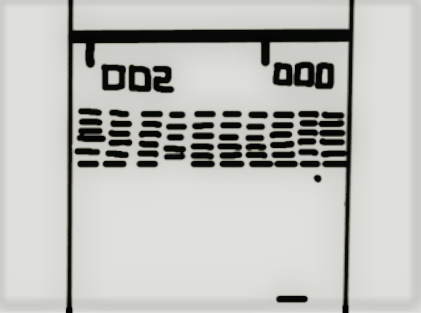

UN CASSEBRIQUE AFTERWORK
Description du projet Cassebrique
"Ensemble nous avons choisi de créer le jeu des briques."
Les règles du jeu
Le but étant de casser toutes les briques à l'aide d'une raquette et d'une balle, le joueur doit les casser en utilisant une interface qui, dans notre cas sera un clavier.
Qu'apportons-nous à ce jeux ?
On a pensé à des améliorations pour renforcer l'intérêt du jeu. La modification la plus classique est l'ajout de bonus ou malus qui tombent de certaines briques détruites et produisent des effets divers. Le principe général est de détruire, au moyen d'une ou plusieurs balles, un ensemble de briques se trouvant dans un niveau pour accéder au niveau suivant.
Pourquoi avoir choisi le jeu Cassebrique ?
C'est un jeu que nous avons tous jouer à un moment donnée pendant notre enfance et qui rappel des souvenirs avec les anciens designs bien rétro.
Team Promo7.

Tout une organisation
En un temps imparti et en distanciel nous avons pratiqué la méthode Agile à l'aide d'un outil de gestion de projet en ligne avec Trello. Un outil collaboratif gratuit, permettant de travailler en ligne et à distance sur des projets communs.
Nous nous sommes réparti les tâches avec des deads-lines à suivre et nous pouvions voir en temps réel l'évolution de notre projet. Pour la communication nous avons aussi créé un groupe sur Whatsapp afin de communiquer directement.
Un projet afterwork
Chaque année Passerelle Numérique de l'école Centrale Marseille organise un projet afterwork qui consiste à montrer les compétences acquises lors de la formation. Les aprenants formes des groupes de 3 à 5 personnes qui se réunissent pour concevoir et développer un produit numérique interactif et ludique. Tout en apprenant et expérimentant les méthodes Agiles. Qui sera par la suite présenté publiquement.

Plus qu'une équipe
Nous sommes un groupe d’apprenants passionnés par la programmation et le monde du numérique. Très vite nous avons formé notre groupe par affinité mais aussi par nos différentes compétences. En réunissant nos connaissances communes, que ce soit en back-end, fron-end mais aussi nos côtés designer ui/ux. Nous avons réussi à collaborer ensemble, en distanciel grâce à la méthode Agile en donnant le meilleur de nous-mêmes.
La team promo7
Technologies utilisées
- Javascript 52.0%
- CSS 29.3%
- HTML 18.7%

Accès au jeux
Le design

A l'origine nous hésitions entre le style Casino mais très vite nous nous sommes tous mis d'accord pour retrouver l'interface de notre enfance. Un style rétro des années 80. Nostalgie oblige.